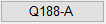
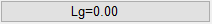

")

Erzeugen, Ableiten und Bearbeiten einer Biegeform.
Empfehlung
Wählen Sie zur Erzeugung der Biegeform die Funktion [ForSch]. Diese Funktion bietet die meisten Möglichkeiten. Für übliche Bewehrungsformen steht Ihnen die Formtyptabelle für Standardtypen [ForTyp] zur Verfügung. Wenn die Schalform so ausgebildet ist, dass kein Standardtyp verwendet werden kann, können Sie den Auszug mit der Funktion [ForAbl] an einer Schalkante ableiten.
Eine weitere Möglichkeit besteht darin, die Form aus Linien und Teilkreisen vorzuzeichnen und dann in eine Auszugsform mit Verlegung zu ändern [ForGeo]. Mit [ForGeo] kann auch aus einer Stabstahlform eine Mattenform und umgekehrt gebildet werden.
Vorbemerkungen
·Die Ausführbarkeit einer Biegeform wird nicht geprüft. ·Bei der Biegerichtung können Sie zwischen (1) Längs - und (2) Querrichtung unterscheiden. Biegerichtung 1 bedeutet, dass die Längsstäbe gebogen und als Biegeform dargestellt werden. Wählen Sie diese Biegerichtung für normale Bügelmatten. Mit der Biegerichtung 2 können Sie die Biegeform hintereinander in Längsrichtung, z. B. in einer Wand, verlegen. ·Beim Erzeugen und Verändern der Biegeformen wird die maximale Ausdehnung geprüft. Wenn die Summe der Teillängen größer ist als die Abmessungen der Matte, werden Sie durch einen Warndialog darauf hingewiesen. Die Abmessungen können Sie in der Rundstahlliste eintragen bzw. ändern. [ISBCAD Hauptmenü | Betonstahl Tabellen].
|

Funktionen |
Beschreibung |
|---|---|
Biegeform an Schalkante ableiten. |
|
|
Biegeform aus einer Typentabelle erzeugen. |
Biegeform aus Geometrie-Polygon erzeugen. |
|
|
Formtyp an Schalung ableiten. |
Einzelne Position löschen (Form bleibt erhalten). |
|
Form löschen. |
|
Matte über den Auszug ändern. |
|
Auszugsform über Dehnen verändern. |
|
Geometrie dehnen. |
|
1 Teillänge an der Auszugsform verändern. |
|
1 Teillänge an der Auszugsform anfügen. |
|
Vorhandene Form kopieren. |
|
Informationen über vorhandene Rundstahlauszüge- und verlegungen. |
|
Biegerollendurchmesser anzeigen. |
|
Biegeliste mit Zusatztext ergänzen. |
|
|
Summandentext für Auszüge festlegen. |
|
Örtlich zu biegende Bewehrung erzeugen oder ändern. |
|
Örtlich zu biegende Bewehrung entfernen. |


Optionen |
Auf den Schaltflächen wird jeweils die aktuelle Einstellung angezeigt. Die Einstellungen können situationsbedingt über die Schaltflächen geändert werden. |
|---|---|
 |
Pos.X: Anzeige der aktuellen Position. Ø...: Voreinstellung des Durchmessers; Anzeige ggf. mit aktueller Anzahl der Stahlelemente. |
|
nBautl=...: Bauteilfaktor. 0.03: Voreingestellte Betondeckung. Öffnet den Dialog Betondeckung nach EC2. |
 |
Aktuelle Länge (in Eingabeeinheiten). |